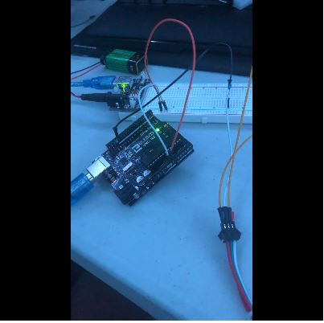
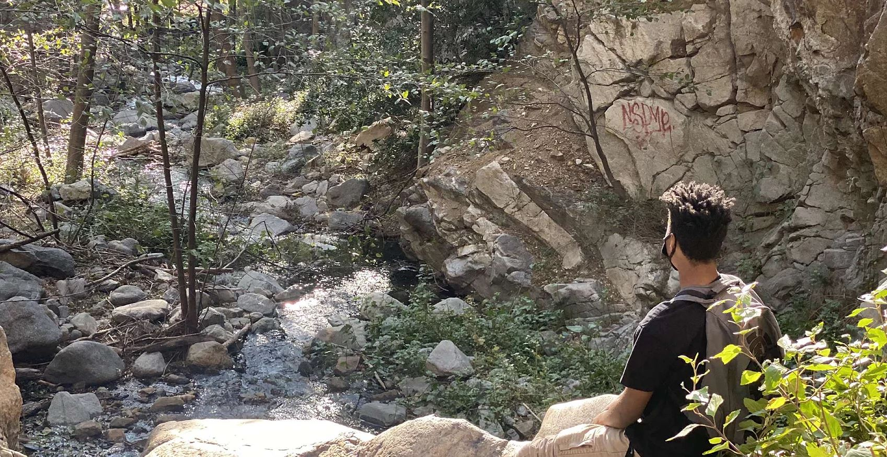
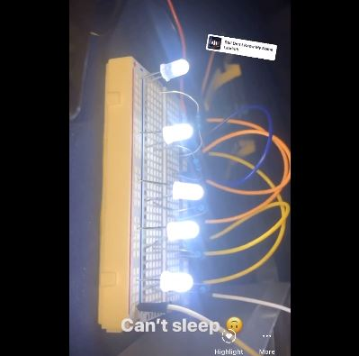
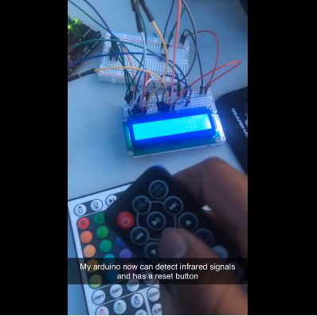
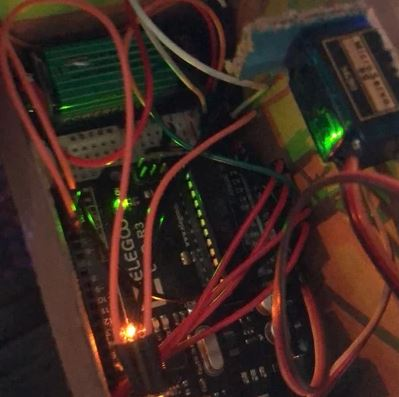
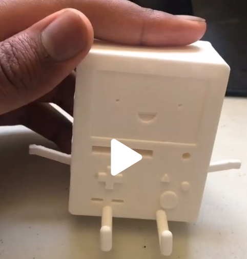
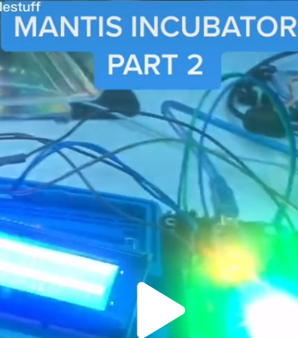
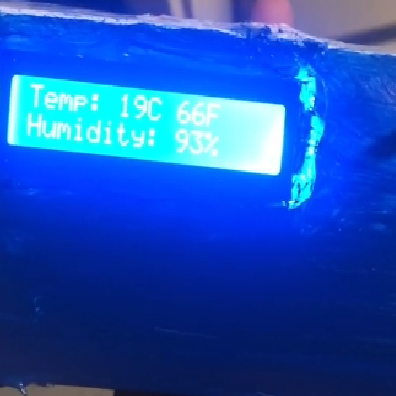
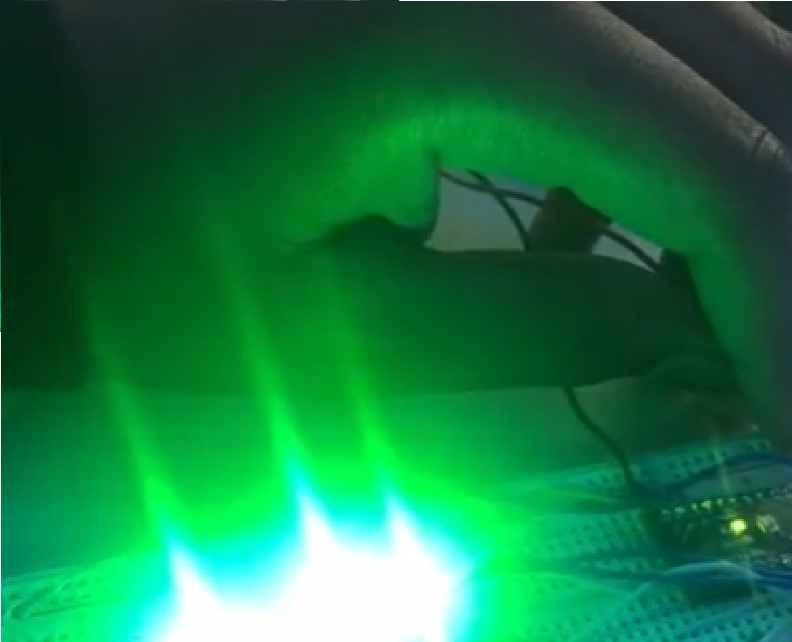

Arduino / Hardware
LED light strip
An Arduino-controlled light strip, brought to life with code.
Watch demo ↗NOC Analyst at Lightning AI
I’m Raymond — a builder with a love for technology, creative problem-solving, and figuring out how things work.

01 / Selected experience
Practical experience. Thoughtful solutions.
A few things I’ve worked on along the way.
Network Operations Center (NOC) Analyst
Aug 2026–present · Monitoring, Linux & incident response
Automated Systems Analyst I
Jun 2025–Apr 2026 · Automation, analytics & public-service applications
Automated Systems Technician
Mar 2024–Jun 2025 · Network operations & IT support
DevOps Engineer Intern
May–Jul 2023 · GitHub Actions, Python & GCP
Azure DevOps Engineer Intern
Jun–Aug 2022 · Pipelines & cloud infrastructure
Software Engineer
Jan–May 2022 · Unity, C# & pixel art
02 / The workbench
Lights, robots, and a little imagination.
Personal projects built to learn by doing.

Arduino / Hardware
An Arduino-controlled light strip, brought to life with code.
Watch demo ↗
Arduino / Hardware
Exploring programmable lighting with an Arduino.
Watch demo ↗
Arduino / Hardware
Converting infrared signals into hexadecimal values.
Watch demo ↗
Arduino / Hardware
A small crane controlled with an Arduino.
Watch demo ↗
3D printing / Creative
Bringing an Adventure Time character off the screen with 3D printing.
View build ↗
Arduino / Hardware
An Arduino project for a very small world.
Watch demo ↗
Arduino / Hardware
Turning a temperature module into a working thermometer.
Watch demo ↗
Arduino / Hardware
A starting-light countdown: three red lights, then go.
Watch demo ↗03 / Beyond the work
When I’m away from the keyboard, you might find me hiking, painting, longboarding, or tending to my garden. That same curiosity finds its way into everything I build.
Meet the person behind the projects ↗{kind=link}